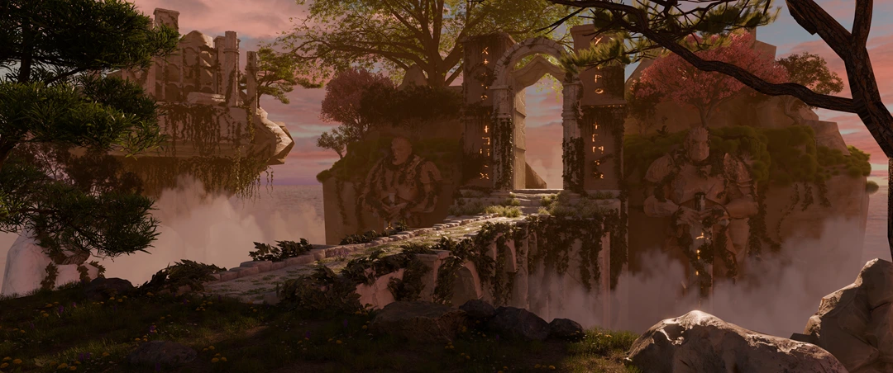
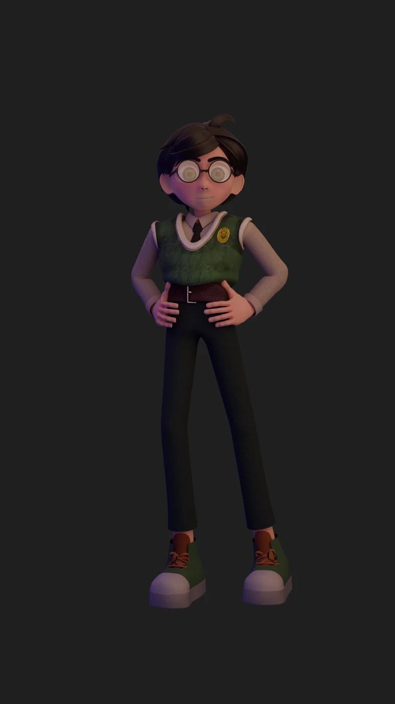
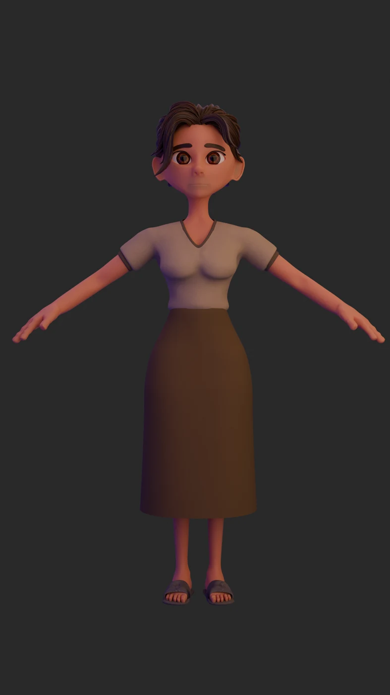
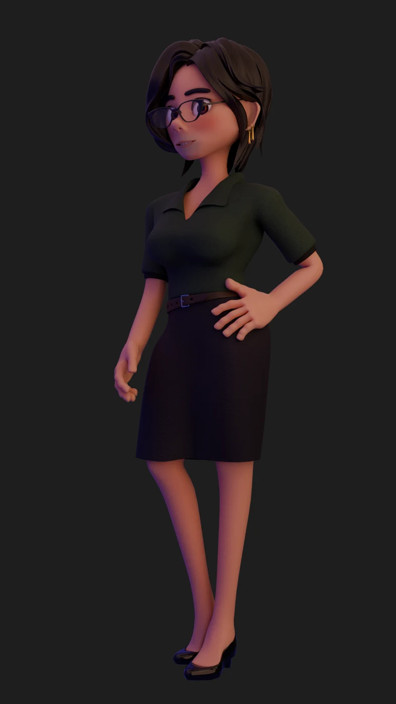

3D artist.
Worlds & characters.

Ruins EnvironmentEnvironment art · Blender / ArboreaExplore project
Jann Railey De Chavez / LUMNModelling · Sculpting · Animation
Characters for
The Empty Frame.
Meet Echo, Nerissa and Prof. Milana from our upcoming animated film.
Impastory Studios & Marionette Motion

Echo
The main character
Nerissa
Echo’s mother
Prof. Milana
Echo’s teacher3D modelling & rigging by LUMN. Texturing by Prinz. Echo concept design by Elaghast.
Explore the work.
Characters, environments, sculpts and more.
Choose a discipline or explore the complete collection.
 KAEL DRAKTHORNE / CHARACTER SCULPT
KAEL DRAKTHORNE / CHARACTER SCULPT